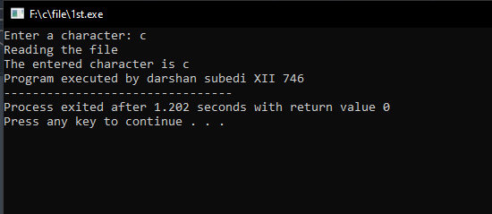

Write a C program to write a character and display it using fgetc() and fputc() functions.
#include<stdio.h>
int main(){
FILE *fp;
char ch, c;
fp = fopen("./filechar.txt", "w+");
printf("Enter a character: ");
scanf("%s", &ch);
fputc(ch, fp);
printf("Reading the file\n");
rewind(fp);
c = fgetc(fp);
printf("The entered character is %c", c);
printf("\nProgram executed by darshan subedi XII 746");
}
Output:

File:
Write a C program to write a number and display it using getw() and putw() functions.
#include<stdio.h>
int main(){
FILE *fp;
int n, n1;
fp = fopen("./fileint.txt", "w+");
printf("Enter a number: ");
scanf("%d", &n);
putw(n, fp);
printf("Reading the file\n");
rewind(fp);
n1 = getw(fp);
printf("The entered number is %d", n1);
printf("\nProgram executed by darshan subedi XII 746");
}